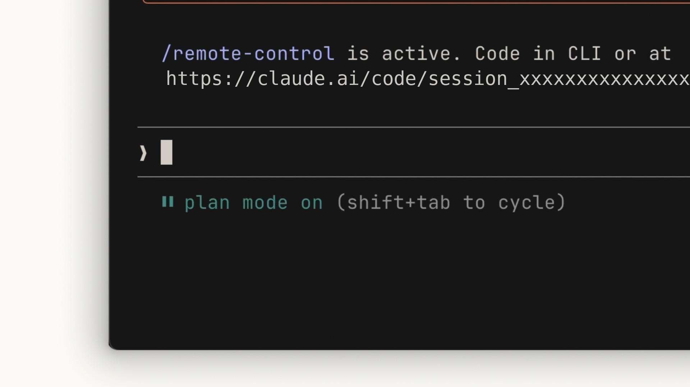
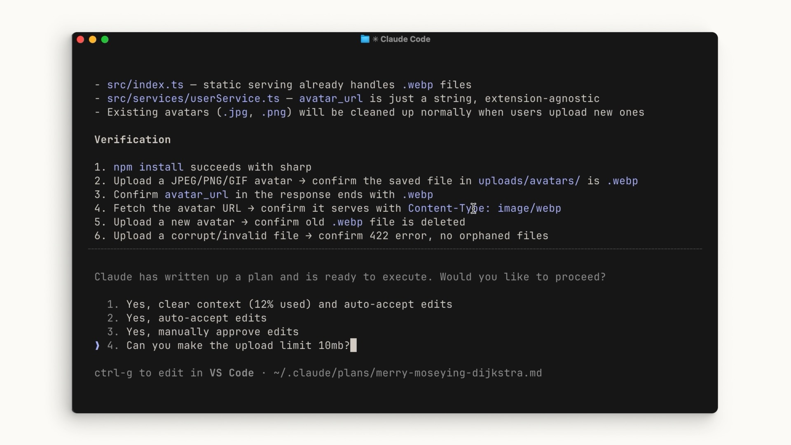
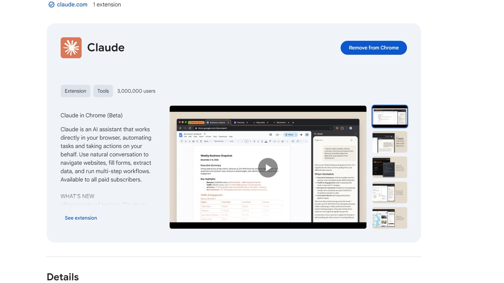
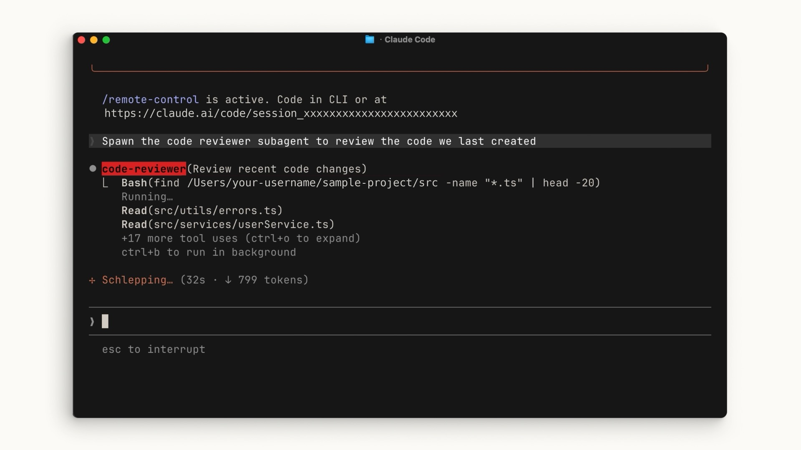

Цикл Explore → Plan → Code → Commit
Чему научитесь
Видео 3:11 и текст урока
К концу урока вы сможете:
- назвать четыре шага цикла Explore → Plan → Code → Commit и объяснить, что даёт каждый;
- исследовать код и получать план в plan mode, поправляя его до того, как будет написана первая строка кода;
- подготовить этап кода: критерии успеха, инструменты вроде Claude in Chrome и надёжный набор тестов;
- перед коммитом проверить работу субагентом-ревьюером и поручить Claude написать сообщение коммита.
Видео и текст урока.
Если запомнить из этого курса что-то одно, пусть это будет такой порядок работы: Explore, Plan, Code и Commit — исследовать, спланировать, написать код, закоммитить. Без него большинство сразу просит Claude написать код, а значит, потом приходится чаще поправлять курс.
Explore и Plan
Быстрее всего первые два шага проходят в plan mode. В plan mode Claude не может править файлы. Он читает файлы и запускает команды оболочки, чтобы осмотреться, и собирает сведения о том, как будет решать задачу.
Чтобы войти в plan mode, нажимайте Shift + Tab, пока в строке состояния не появится plan mode on. Затем напишите промпт, например такой:

Shift+Tab переключает режимы.I need to add WebP conversion to our image upload pipeline. Figure out where in the pipeline it should happen, whether we need new dependencies, and how to approach it.
Claude прочитает нужные файлы, поищет кое-что в интернете и выдаст вам план действий. Просмотрите его и решите, отвечает ли он вашим требованиям. Если нет, попросите переработать конкретные части.

Это лучший момент, чтобы поправить курс: код ещё не написан. Кроме того, субагента Explore можно запустить и вне plan mode — если вам нужна просто общая сводка по кодовой базе и вы не собираетесь потом ничего менять.
Code
Когда план вас устроит, выберите «approve», чтобы принять его, и Claude пойдёт по пунктам списка. Как он будет действовать, зависит от режима разрешений: Claude может спрашивать вас на каждом шаге, принимать правки файлов автоматически или работать в режиме auto, где большинство действий просматривает фоновая проверка безопасности.
Прежде чем считать план «выполненным», Claude постарается сам разобраться с проблемами, но иногда вмешаться придётся вам. В этом и польза работы в plan mode: после выполнения у вас есть ещё и контекст того, как вы пришли к результату, и он помогает направлять следующие решения Claude.
Несколько советов, чтобы этап кода прошёл глаже:
- Задайте критерии успеха. Чтобы Claude был уверен в своих результатах, ему нужно ясно понимать, что считать «правильным». Пропишите это явно, когда составляете план.
- Добавьте инструменты. Инструменты, которые помогают Claude достигать целей, сильно сокращают лишний обмен репликами. Например, если вы делаете веб-интерфейсы, установите расширение Claude in Chrome: тогда Claude Code сможет управлять вкладкой браузера и сам проверять интерфейс.

Расширение Claude in Chrome в Chrome Web Store. - Подключите набор тестов. Дайте Claude набор тестов, по которому он сможет постоянно себя проверять. Claude может даже написать тесты за вас. Но прежде чем передавать эту работу Claude, убедитесь, что тесты — надёжный источник истины, иначе можно получить ложноположительные результаты.
Совет: если Claude раз за разом натыкается на одни и те же проблемы, попросите его записать решение в файл CLAUDE.md.
Commit
Когда вы сами проверили изменения и довольны результатом, пора отправлять код. Перед коммитом запустите субагента-ревьюера, чтобы он проверил вашу работу. Субагент смотрит на кодовую базу свежим взглядом: у него нет предвзятости, которая могла накопиться у основного агента за сессию.

code-reviewer читает файлы и проверяет последние изменения.Затем попросите Claude составить сообщение коммита в вашем стиле. И так по кругу.
Итог
Чтобы работать с Claude Code эффективно, придерживайтесь цикла Explore, Plan, Code и Commit:
- Explore даёт Claude нужный контекст о вашем проекте.
- Plan создаёт план действий, по которому Claude оценивает, удалась ли работа.
- Code — это обмен репликами между вами и Claude, пока вы не придёте к окончательному результату.
- Commit помогает проверить и отправить код, чтобы взяться за следующую функцию.
Дальше
Следующий урок — «Управление контекстом»: что занимает окно контекста Claude, что происходит, когда оно заполняется, и как расходовать его с умом.
Оригинал урока: The explore → plan → code → commit workflow.